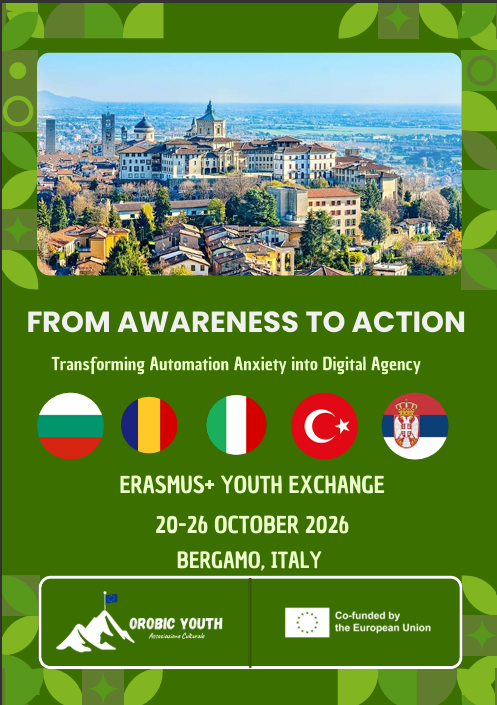
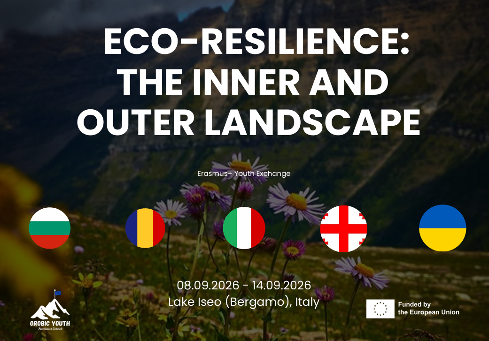
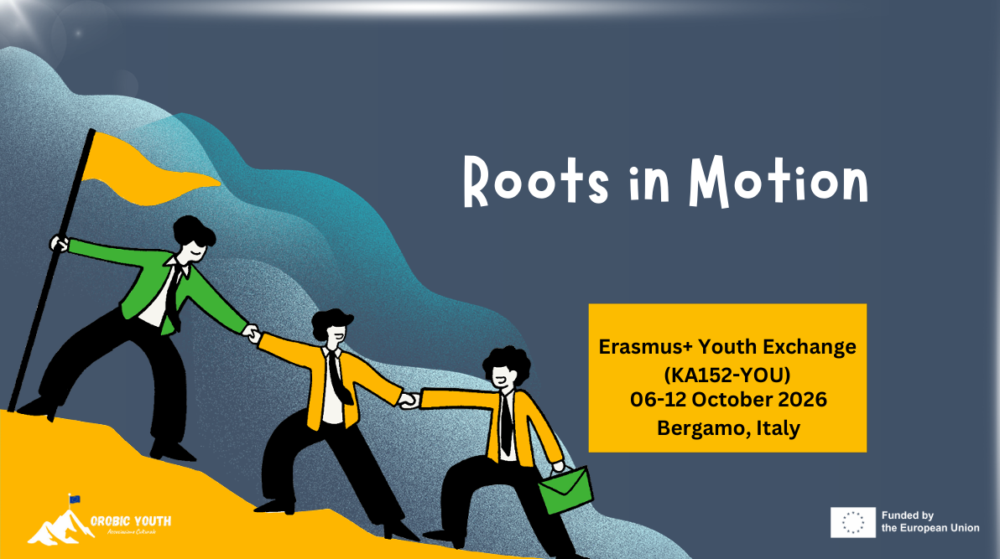

Who We Are
Orobic Youth stands for energy, innovation, and active engagement. We are a youth NGO composed of young professionals and students from Bergamo, acting as social entrepreneurs with a strong passion for social purposes.


Orobic Youth
We create opportunities for young people in Bergamo and across Europe to be active, gain skills, and drive positive social change.
Who we are
Orobic Youth stands for energy, innovation, and active engagement. We are a youth NGO composed of young professionals and students from Bergamo, acting as social entrepreneurs with a strong passion for social purposes.
To enrich the educational, social, and cultural life of young people in our community, particularly those with fewer opportunities. We believe young people must be the driving force in shaping society.
Upcoming projects
Click any thumbnail to view the full project on Canva. If something sparks your curiosity, use Join This Project and we'll get back to you.

Youth Exchange transforming automation anxiety into digital agency. Bergamo, 20–26 October 2026 — with partners from Bulgaria, Romania, Italy, Türkiye and Serbia.

Youth Exchange on ecological resilience and wellbeing at Lake Iseo (Bergamo), 8–14 September 2026 — with partners from Bulgaria, Romania, Italy, Georgia and Ukraine.

Erasmus+ Youth Exchange (KA152-YOU) exploring identity, heritage and belonging. Bergamo, 6–12 October 2026.

A 10-day exchange in Bergamo bringing together young Europeans to explore identity, belonging, and civic engagement through non-formal workshops.

A capacity-building programme for youth workers and student leaders — practical tools for facilitation, project design, and inclusive leadership.

A week of youth-led neighbourhood initiatives — from community gardens to intercultural dinners — designed and delivered by local young people.
Our impact
Interactive workshops developing communication, leadership, and creative thinking.
Empowering youth to plan and implement local initiatives that respond to community needs.
Inclusive spaces for youth from diverse backgrounds via group work, simulations, and creative workshops.
Capacity building, research and advocacy, and conferences that connect youth, experts, and institutions.
Our team
President & Legal Representative
A young professional with extensive experience in youth projects, project coordination, and non-formal education at local and international levels.
Project Coordinator
A young professional dedicated to social inclusion and intercultural dialogue, experienced in facilitating creative workshops and supporting international participants.
Whether you're a young person looking to grow, a youth worker seeking collaboration, or an organisation wanting to partner — we'd love to hear from you.